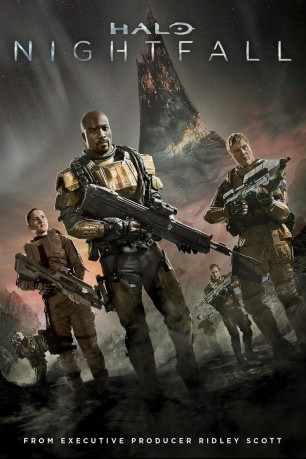

")
 
 IMDB-Wertung: 5.7 / 10
IMDB-Wertung: 5.7 / 10  Metascore:
Metascore: 
In dieser Realfilmserie von 343 Industries und Scott Free Productions müssen sich die Elite-Agenten des MND auf einer gefährlichen und feindseligen Welt einer dunklen Gefahr stellen.Die Serienadaption der „Halo“-Videospielreihe dreht sich um den Menschenjäger Jameson Locke (Mike Colter), der für die „Office of Naval Intelligence“ (ONI) als Agent arbeitet. Nach einem Angriff mit biologischen Waffen decken Locke und seine Mannschaft ein Komplott auf und stoßen dabei auf ein antikes Artefakt.Als ausführender Produzent fungierte Ridley Scott (Alien, Prometheus, Gladiator). Die fünfteilige Miniserie ist Teil der „The Master Chief Collection“ , einer überarbeiteten Sammlung der ersten vier „Halo“-Spiele, die (Microsoft) während der E3 ankündigte. Das Drehbuch stammt von „Prison Break“-Schöpfer Paul Scheuring.
Jahr: 2014
Dauer: 30 Minuten
FSK: 16
Land: Studio: PolybandTonspuren: MPEG2 - , MPEG2 - , MPEG2 - ,
Untertitel:
Auflösung: 1080p (1920x800) Größe: 1402 MB
Genre: Action, Thriller, Sci-Fi, Abenteuer, TV-Serie
Regisseur: Sergio Mimica-Gezzan
Drehbuch: Paul Scheuring
Soundtrack:
Darsteller:
 Mike Colter als Locke
Mike Colter als Locke Christian Contreras als Ramos
Christian Contreras als Ramos Jonathan Harden als Axl
Jonathan Harden als Axl Laurence Doherty als Sedran Marine
Laurence Doherty als Sedran Marine Paul Kennedy als Rowan Douard
Paul Kennedy als Rowan DouardDatei: X:\HD-Trick-Collections\Halo\Halo Nightfall\Halo Nightfall S01E01 - It's Only Just Beginning.mkv seit 25.11.2015
Festplatte: Kinder-Filme+Trick
 Es gibt insgesamt 8 Filme in der Gruppe 'HD-Trick-Collections\Halo'
Es gibt insgesamt 8 Filme in der Gruppe 'HD-Trick-Collections\Halo'